Actualité
Événements à venir - 2026
Salon « Art à Bâbord » 2026
Du 11 au 26 avril 2026
SAINT QUAY-PORTRIEUX (22)
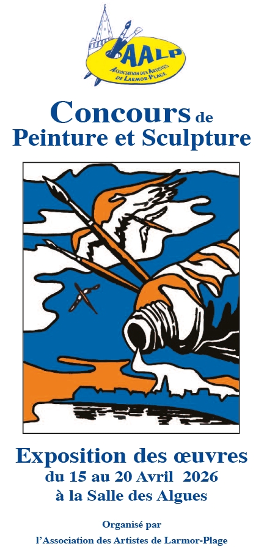
Concours de Peinture et Sculpture 2026
Du 15 au 20 avril 2026
LARMOR-PLAGE (56)
Salon d'Art de Guilliers 2026
Du 25 avril au 3 mai 2026
GUILLIERS (56)
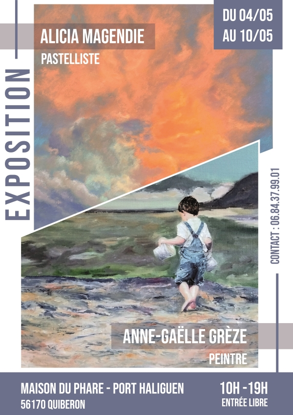
Exposition personnelle
Du 4 au 10 mai 2026
QUIBERON (56)
Médiathèque de Cléguer
Du 19 mai au 20 juin 2026
CLÉGUER (56)
Exposition personnelle
Du 6 au 12 juillet 2026
DOËLAN – CLOHARS-CARNOËT (29)
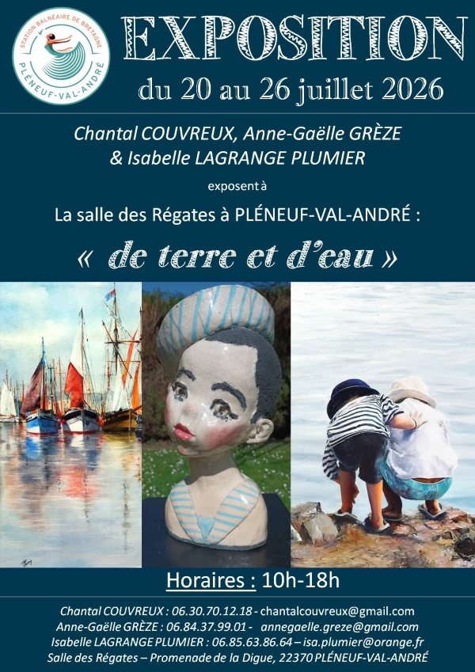
Exposition personnelle
Du 20 au 26 juillet 2026
PLÉNEUF-VAL-ANDRÉ (22)
Salon Art'Gâvr' 2026
Du 30 juillet au 9 août 2026
GÂVRES (56)
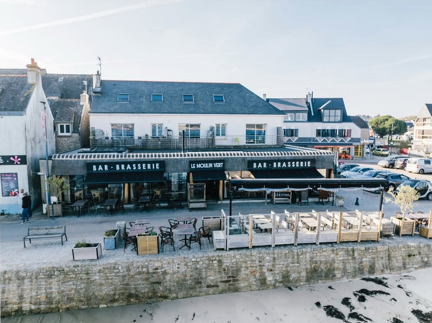
Exposition permanente
Bar / brasserie Le Moulin Vert
LOMENER (56)
Événements passés - 2026
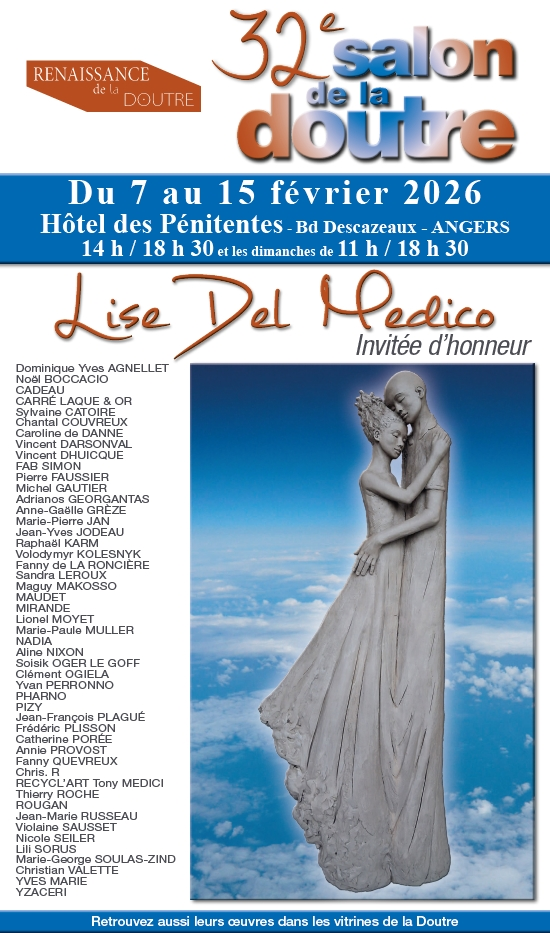
32e Salon de la Doutre
Du 7 au 15 février 2026
ANGERS (49)
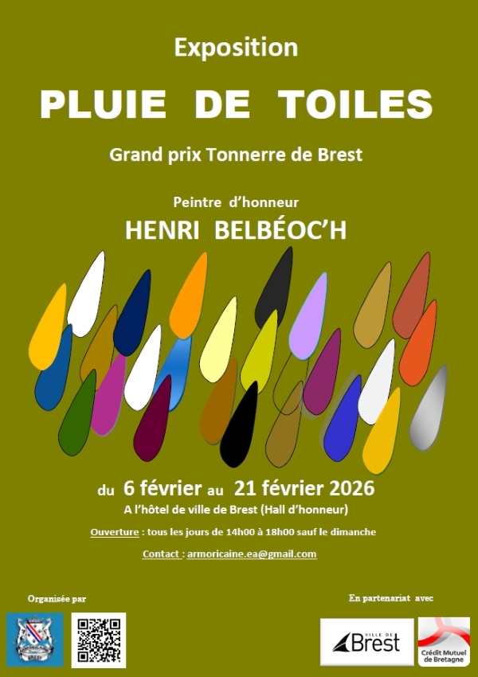
Tonnerre de Brest – Pluie de toiles
Du 6 au 21 février 2026
BREST (29)
Événements passés - 2025
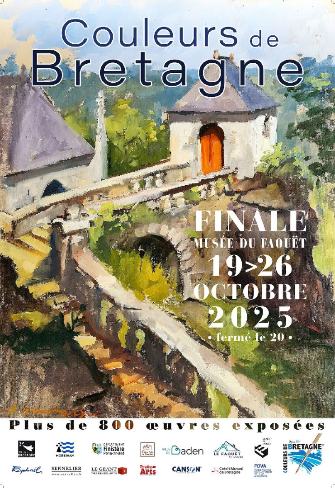
Couleurs de Bretagne 2025
Du 19 au 26 octobre 2025
LE FAOUËT (56)
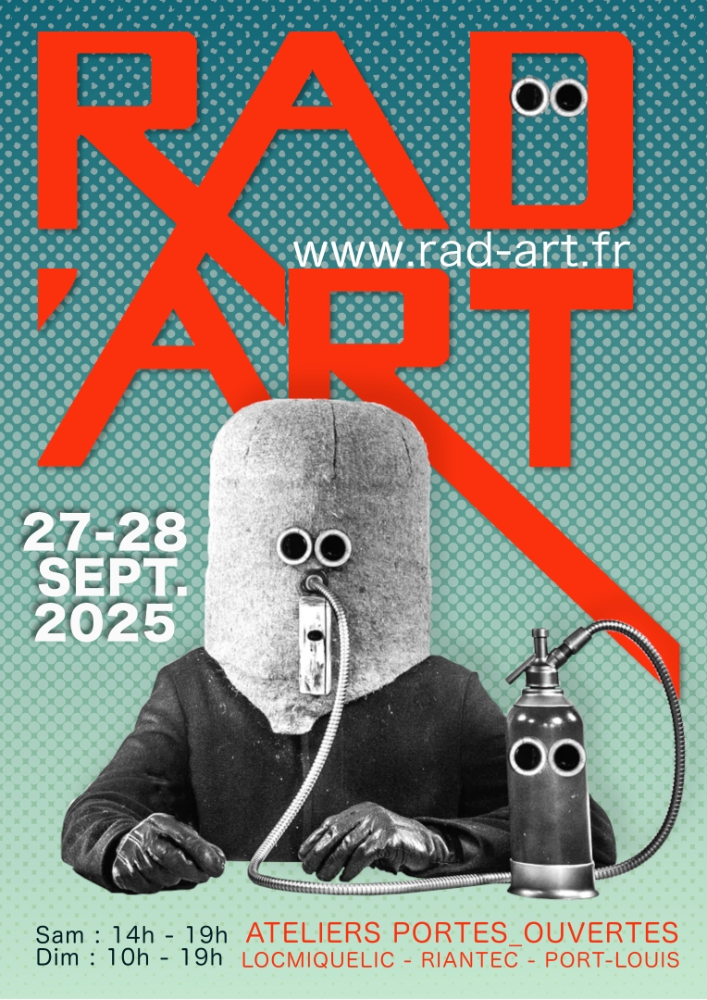
Rad'Art 2025
27 et 28 septembre 2025
LOCMIQUELIC (56)
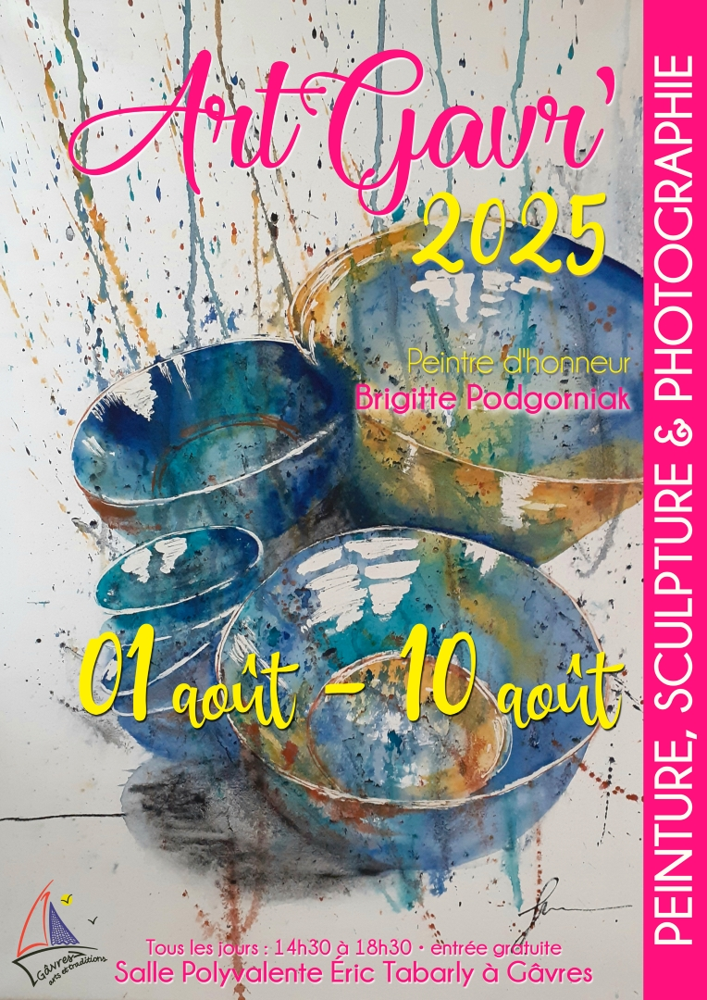
Art'Gâvr' 2025
Du 1er au 10 août 2025
GÂVRES (56)
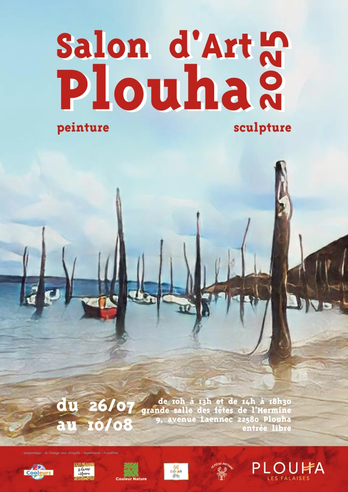
Art à Bâbord 2025 – Plouha
Du 26 juillet au 10 août 2025
PLOUHA (22)

Salon de la petite mer 2025
Du 24 juillet au 20 août 2025
RIANTEC (56)
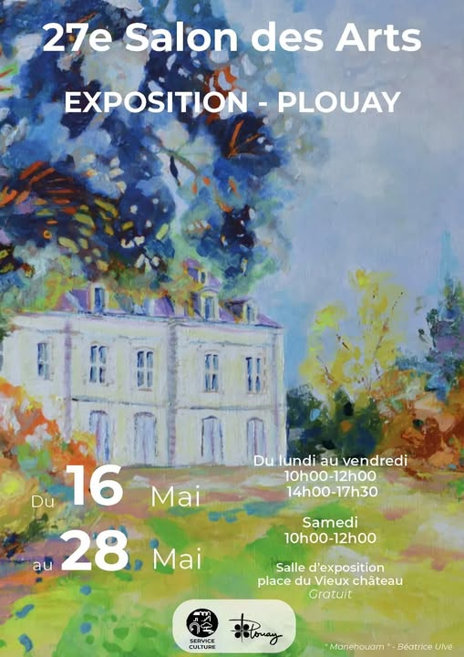
27ème Salon des Arts de Plouay
Du 16 au 28 mai 2025
PLOUAY (56)
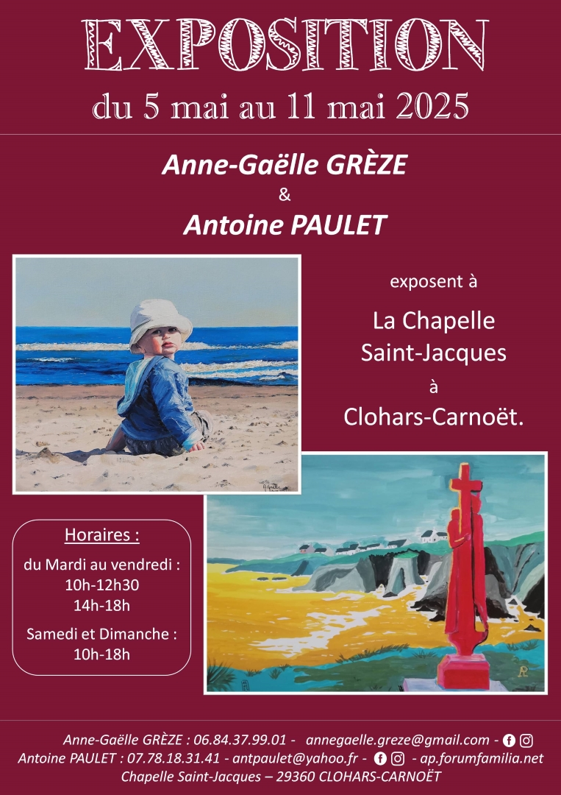
Exposition personnelle
Du 5 au 11 mai 2025
CLOHARS-CARNOËT (29)
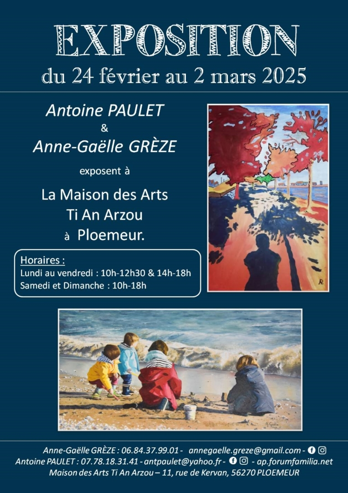
Exposition personnelle
Du 24 février au 2 mars 2025
PLOEMEUR (56)